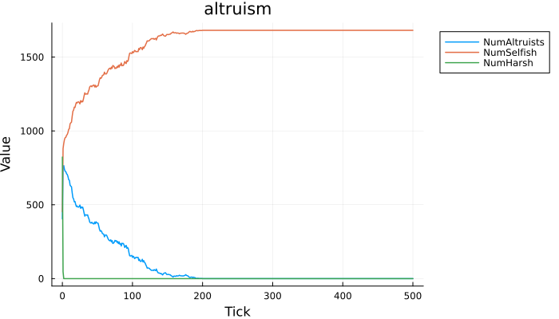
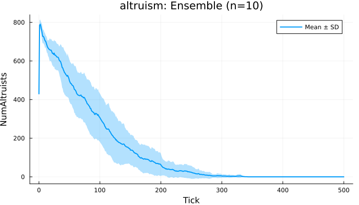
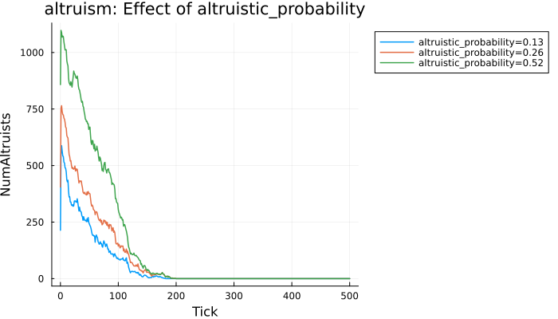

Altruism
Overview
WHAT IS IT?
This is an evolutionary biology model. It models population genetics with respect to the fitness of traits that are affected by social and environmental conditions. The model has two types of patch agents: altruistic agents and selfish agents.
The basic premise of the model is that the selfish agents and the altruistic agents are competing for each spot in the world by entering into a genetic lottery. You can imagine these agents as plants who “seed” for a spot, and the dominant seed generally wins. The details of the lottery are explained below in HOW IT WORKS.
Under normal (non-interfering) environmental conditions, the selfish agents win, and the altruistic population is driven to extinction. However, as outlined in HOW TO USE IT, when the environmental conditions are made more harsh, the altruistic population is able to survive, and even dominate the selfish population.
This model (and Cooperation and Divide the Cake) are part of the EACH unit (“Evolution of Altruistic and Cooperative Habits: Learning About Complexity in Evolution”). See http://ccl.northwestern.edu/rp/each/index.shtml for more information on the EACH unit. The EACH unit is embedded within the BEAGLE (Biological Experiments in Adaptation, Genetics, Learning and Evolution) evolution curriculum. See http://ccl.northwestern.edu/rp/beagle/index.shtml.
HOW IT WORKS
Patches live in five-cell, plus-sign-shaped neighborhoods. Whenever a patch is calculating something about its fitness, it is the center of the neighborhood. For another patch, when that patch is calculating, it becomes merely one of the neighbors.
Each patch is an agent that has a fitness. Each patch is also the location of a lottery for its space. The patch and the four surrounding patches put in “seeds” to try to get the patch turned to their type of patch, altruist or selfish. Being successful in the lottery is getting patches to turn to your type. We’re assuming here that the type (altruistic or selfish) is the important genetic trait.
Each patch calculates its own fitness using equation: if it is A (altruist): 1 - cost + (Number Altruists in Neighborhood / 5 * benefit from Altruists) if it is S (selfish): 1 + (Number Altruists in Neighborhood / 5 * benefit from Altruists) Thus, the fitness of the S patch will be higher than the fitness of the A’s. If the cost is 0.2 and benefit is 0.5, for an A surrounded by two S’s and two A’s, then the fitness of this spot is 1 - 0.2 + (3/5 * 0.5) = 1.1.
After each patch has calculated its fitness, it looks to its four neighbors. Each of the five patches, including itself, puts a weighted seed into a genetic lottery for this center spot. So, for example, if the neighborhood is ASASA, each of the three A’s register their fitness value, and each of the two S’s put in their fitness. The A’s are added, and the S’s are added. Let us assume that the A’s add up to 3.2 (this includes the A in the center spot), and the S’s add up to 2.6. These two numbers are the altruist weight and selfish weight respectively, in the lottery for the center spot. Now, the larger number, whichever it is, is called the Major seed; it is divided by the sum of all the fitnesses. Thus, 3.2/(3.2 + 2.6) = .552. This number is the Altruism seed in the lottery. The minor seed is 2.6/(3.2 + 2.6) = .448. (Notice that the Altruism seed of the parent is 3/5 = .600, while the child’s is .552. Even though altruism is dominating, it is losing ground.)
There are a number of ways of doing the lottery itself. Currently, we choose a random number between 0 and 1. Now, if the Number is below the Minor seed, the minor weight gets the spot, and if it is above the major seed, the major seed gets the spot. So, in the example, if the random number is anywhere from .449 to 1, then the Major seed gets it. If it is between 0 and .448, the minor seed gets it.
THINGS TO TRY
At first, run the model with Harshness and Disease both at 0. Notice that the selfish population quickly dominates the world, driving the altruistic population to extinction. How do respective population sizes affect the outcome?
Play with the values of cost and benefit. What are realistic values for actual genetic competition? How does initial population size effect the significance of these values?
Increase the Harshness and Disease values, independently, and with respect to one another. What are the effects of the Harshness Model? of Disease? How are the values dependent on one another? At what values does the altruistic population begin to have greater success?
Consider why the introduction of Harshness and Disease conditions affects the success of the altruistic population. How does each population, run alone, respond to the Harshness and Disease conditions? If you imagine the black spots as Voids (a third type of competing agent), what is the fitness relationship between Altruists and Voids? Selfish agents and Voids?
Can you find slider values that maximize the advantage of the altruistic agents?
Try running BehaviorSpace on this model to explore the model’s behavior under a range of initial conditions.
EXTENDING THE MODEL
The model can be extended in a number of interesting directions, including adding new environmental variables, adding different types of agents, and changing the altruistic and selfish weighting under different environmental conditions.
This model does not address the behaviors of individuals, only the relative weights of genetic traits. A next step in considering the evolution of altruism is to model altruistic behaviors. (See the related model: Cooperation.)
NETLOGO FEATURES
This model uses patches as its basic agents. Can you design an “equivalent” model using turtles? How would the model dynamics be affected?
RELATED MODELS
- Cooperation
- Divide the Cake
CREDITS AND REFERENCES
This model, the Cooperation model and the Divide the Cake model are part of the curriculum unit “Evolution of Altruistic and Cooperative Habits: Learning About Complexity in Evolution”. See http://ccl.northwestern.edu/rp/each/index.shtml for more information. The EACH unit is embedded within the BEAGLE (Biological Experiments in Adaptation, Genetics, Learning and Evolution) evolution curriculum. See http://ccl.northwestern.edu/rp/beagle/index.shtml.
This model is based on a paper by Mitteldorf and Wilson, 2000, “Population Viscosity and the Evolution of Altruism”, Journal of Theoretical Biology, v.204, pp.481-496.
Thanks also to Damon Centola and Scott Styles.
HOW TO CITE
If you mention this model or the NetLogo software in a publication, we ask that you include the citations below.
For the model itself:
- Wilensky, U. (1998). NetLogo Altruism model. http://ccl.northwestern.edu/netlogo/models/Altruism. Center for Connected Learning and Computer-Based Modeling, Northwestern University, Evanston, IL.
Please cite the NetLogo software as:
- Wilensky, U. (1999). NetLogo. http://ccl.northwestern.edu/netlogo/. Center for Connected Learning and Computer-Based Modeling, Northwestern University, Evanston, IL.
COPYRIGHT AND LICENSE
Copyright 1998 Uri Wilensky.

This model is licensed under the Creative Commons Attribution-NonCommercial-ShareAlike 3.0 License. To view a copy of this license, visit https://creativecommons.org/licenses/by-nc-sa/3.0/ or send a letter to Creative Commons, 559 Nathan Abbott Way, Stanford, California 94305, USA.
NetLogo itself is free software for non-commercial use under the terms of the GNU General Public License (see full license information here).
To inquire about commercial licenses for either NetLogo or specific models from the models library, please contact netlogo-commercial-admin@ccl.northwestern.edu.
This model was created as part of the project: CONNECTED MATHEMATICS: MAKING SENSE OF COMPLEX PHENOMENA THROUGH BUILDING OBJECT-BASED PARALLEL MODELS (OBPML). The project gratefully acknowledges the support of the National Science Foundation (Applications of Advanced Technologies Program) – grant numbers RED #9552950 and REC #9632612.
This model was converted to NetLogo as part of the projects: PARTICIPATORY SIMULATIONS: NETWORK-BASED DESIGN FOR SYSTEMS LEARNING IN CLASSROOMS and/or INTEGRATED SIMULATION AND MODELING ENVIRONMENT. The project gratefully acknowledges the support of the National Science Foundation (REPP & ROLE programs) – grant numbers REC #9814682 and REC-0126227. Converted from StarLogoT to NetLogo, 2001.
Parameters
| Parameter | Type | Default | Description |
|---|---|---|---|
altruistic_probability | Float64 | 0.26 | altruistic probability |
selfish_probability | Float64 | 0.26 | selfish probability |
benefit_from_altruism | Float64 | 0.48 | benefit from altruism |
cost_of_altruism | Float64 | 0.13 | cost of altruism |
disease | Float64 | 0.0 | disease |
harshness | Float64 | 0.0 | harshness |
grid_width | Int | 41 | grid width |
grid_height | Int | 41 | grid height |
max_ticks | Int | 500 | max ticks |
Source Code
The Julia code to run this model:
using ArkModelZoo
_, trajectory = run_altruism()Time Series

Ensemble Runs
Ten replicates with different random seeds, showing mean ± standard deviation.

Parameter Sensitivity
Varying altruistic_probability.

Appendix: Source Code
This model is implemented in the Ark.jl Entity-Component-System (ECS) framework. The code is split into five files, each with a distinct role:
- Parameters: a mutable struct holding all configurable values.
- Components: lightweight data types attached to individual entities (agents).
- Resources: world-level shared state accessible to all systems.
- Systems: functions that operate on entities each tick, defining model behavior.
- Model: wiring that assembles the world, registers resources and systems, and provides the run entry point.
Parameters (parameters.jl)
The parameter struct uses @kwdef so that every field has a default value and can be overridden by keyword. These defaults match the original NetLogo model’s slider settings.
Base.@kwdef mutable struct ALTParams
altruistic_probability::Float64 = 0.26
selfish_probability::Float64 = 0.26
benefit_from_altruism::Float64 = 0.48
cost_of_altruism::Float64 = 0.13
disease::Float64 = 0.0
harshness::Float64 = 0.0
grid_width::Int = 41
grid_height::Int = 41
max_ticks::Int = 500
seed::Int = 42
endComponents (components.jl)
Components are lightweight data types attached to individual entities (agents). Mutable structs hold per-entity state, while empty tag structs act as markers for the ECS query system to efficiently filter entities.
# Dummy component — World requires at least one registered component type.
# Altruism is purely patch-based; no ECS entities are used.
mutable struct ALTDummy
_::Int
end
ALTDummy() = ALTDummy(0)Resources (resources.jl)
Resources are world-level singletons shared across all systems, used for global state and aggregate statistics.
# Patch types
const ALT_HARSH = Int8(0)
const ALT_ALTRUIST = Int8(1)
const ALT_SELFISH = Int8(2)
mutable struct ALTGrid
width::Int
height::Int
ptype::Matrix{Int8} # 0=harsh, 1=altruist, 2=selfish
benefit_out::Matrix{Float64}
altruism_benefit::Matrix{Float64}
fitness::Matrix{Float64}
alt_fitness::Matrix{Float64}
self_fitness::Matrix{Float64}
harsh_fitness::Matrix{Float64}
end
function ALTGrid(w::Int, h::Int)
ALTGrid(w, h,
zeros(Int8, w, h),
zeros(w, h),
zeros(w, h),
zeros(w, h),
zeros(w, h),
zeros(w, h),
zeros(w, h))
end
mutable struct ALTStats
num_altruists::Int
num_selfish::Int
num_harsh::Int
end
ALTStats() = ALTStats(0, 0, 0)Systems (systems.jl)
Systems contain the model logic and execute in a defined order each tick. Each system struct implements either initialize! (run once at setup) or update! (run every tick).
# Von Neumann (4-neighbor) offsets: N, S, E, W
const ALT_VON_NEUMANN = ((0, -1), (0, 1), (1, 0), (-1, 0))
# --- Initialization ---
struct InitALTSystem <: System end
function initialize!(::InitALTSystem, world::World)
params = get_resource(world, ALTParams)
rng = get_resource(world, RNGResource).rng
grid = get_resource(world, ALTGrid)
for x in 1:grid.width, y in 1:grid.height
ptype_val = rand(rng)
if ptype_val < params.altruistic_probability
grid.ptype[x, y] = ALT_ALTRUIST
grid.benefit_out[x, y] = 1.0
elseif ptype_val < params.altruistic_probability + params.selfish_probability
grid.ptype[x, y] = ALT_SELFISH
grid.benefit_out[x, y] = 0.0
else
grid.ptype[x, y] = ALT_HARSH
grid.benefit_out[x, y] = 0.0
end
end
_alt_update_stats!(grid, get_resource(world, ALTStats))
return nothing
end
# --- Main Go System ---
struct ALTGoSystem <: System end
function update!(::ALTGoSystem, world::World)
params = get_resource(world, ALTParams)
rng = get_resource(world, RNGResource).rng
grid = get_resource(world, ALTGrid)
stats = get_resource(world, ALTStats)
w, h = grid.width, grid.height
# Early termination: if no altruists and no selfish patches remain, stop
if stats.num_altruists == 0 && stats.num_selfish == 0
get_resource(world, Terminate).stop = true
return nothing
end
# Phase 1: compute altruism-benefit for each patch
# benefit = benefit_from_altruism * (benefit_out + sum of 4 neighbors' benefit_out) / 5
@inbounds for x in 1:w, y in 1:h
s = grid.benefit_out[x, y]
for (dx, dy) in ALT_VON_NEUMANN
nx = mod1(x + dx, w)
ny = mod1(y + dy, h)
s += grid.benefit_out[nx, ny]
end
grid.altruism_benefit[x, y] = params.benefit_from_altruism * s / 5.0
end
# Phase 2: compute fitness for each patch
@inbounds for x in 1:w, y in 1:h
pt = grid.ptype[x, y]
ab = grid.altruism_benefit[x, y]
if pt == ALT_SELFISH
grid.fitness[x, y] = 1.0 + ab
elseif pt == ALT_ALTRUIST
grid.fitness[x, y] = (1.0 - params.cost_of_altruism) + ab
else # ALT_HARSH
grid.fitness[x, y] = params.harshness
end
end
# Phase 3: lottery (record-neighbor-fitness, find-lottery-weights, next-generation)
_alt_lottery!(rng, grid, params)
_alt_update_stats!(grid, stats)
return nothing
end
# --- Lottery ---
function _alt_lottery!(rng, grid::ALTGrid, params::ALTParams)
w, h = grid.width, grid.height
# Scratch buffers for weights (reuse grid fields after lottery computation)
alt_w = grid.alt_fitness
self_w = grid.self_fitness
harsh_w = grid.harsh_fitness
# Record neighbor fitness: sum fitness by type from self + 4 cardinal neighbors
@inbounds for x in 1:w, y in 1:h
af = 0.0; sf = 0.0; hf = 0.0
# Self
pt = grid.ptype[x, y]
f = grid.fitness[x, y]
if pt == ALT_ALTRUIST
af += f
elseif pt == ALT_SELFISH
sf += f
else
hf += f
end
# 4 cardinal neighbors
for (dx, dy) in ALT_VON_NEUMANN
nx = mod1(x + dx, w)
ny = mod1(y + dy, h)
npt = grid.ptype[nx, ny]
nf = grid.fitness[nx, ny]
if npt == ALT_ALTRUIST
af += nf
elseif npt == ALT_SELFISH
sf += nf
else
hf += nf
end
end
alt_w[x, y] = af
self_w[x, y] = sf
harsh_w[x, y] = hf
end
# Find lottery weights: normalize
@inbounds for x in 1:w, y in 1:h
fitness_sum = alt_w[x, y] + self_w[x, y] + harsh_w[x, y] + params.disease
if fitness_sum > 0.0
alt_w[x, y] /= fitness_sum
self_w[x, y] /= fitness_sum
harsh_w[x, y] /= fitness_sum
else
alt_w[x, y] = 0.0
self_w[x, y] = 0.0
harsh_w[x, y] = 0.0
end
end
# Next generation: probabilistic selection per patch
@inbounds for x in 1:w, y in 1:h
breed_chance = rand(rng)
if breed_chance < alt_w[x, y]
grid.ptype[x, y] = ALT_ALTRUIST
grid.benefit_out[x, y] = 1.0
elseif breed_chance < alt_w[x, y] + self_w[x, y]
grid.ptype[x, y] = ALT_SELFISH
grid.benefit_out[x, y] = 0.0
else
grid.ptype[x, y] = ALT_HARSH
grid.benefit_out[x, y] = 0.0
end
end
end
# --- Termination ---
struct ALTTerminationSystem <: System end
function update!(::ALTTerminationSystem, world::World)
params = get_resource(world, ALTParams)
tick = get_resource(world, Tick)
stats = get_resource(world, ALTStats)
if tick.tick + 1 >= params.max_ticks || (stats.num_altruists == 0 && stats.num_selfish == 0)
get_resource(world, Terminate).stop = true
end
return nothing
end
# --- Helper ---
function _alt_update_stats!(grid::ALTGrid, stats::ALTStats)
na = 0; ns = 0; nh = 0
@inbounds for x in 1:grid.width, y in 1:grid.height
pt = grid.ptype[x, y]
if pt == ALT_ALTRUIST
na += 1
elseif pt == ALT_SELFISH
ns += 1
else
nh += 1
end
end
stats.num_altruists = na
stats.num_selfish = ns
stats.num_harsh = nh
return nothing
endModel (model.jl)
The model file assembles all pieces: it creates the ECS World with the required component types, registers resources, builds the Scheduler with systems in execution order, and exposes the public run entry point. The observer pattern records the trajectory each tick.
function altruism_world(; initial_capacity::Int = 128)
return World(ALTDummy; initial_capacity = initial_capacity, allow_mutable = true)
end
function altruism_systems()
return (
InitALTSystem(),
ALTGoSystem(),
ALTTerminationSystem(),
)
end
function altruism_model(params::ALTParams = ALTParams())
world = altruism_world()
_add_standard_resources!(world, params)
add_resource!(world, ALTGrid(params.grid_width, params.grid_height))
add_resource!(world, ALTStats())
scheduler = Scheduler(world, altruism_systems())
initialize!(scheduler)
return scheduler
end
struct ALTObserver end
function altruism_headers(::ALTObserver)
return ["NumAltruists", "NumSelfish", "NumHarsh"]
end
function altruism_values(::ALTObserver, world::World)
stats = get_resource(world, ALTStats)
return Float64[stats.num_altruists, stats.num_selfish, stats.num_harsh]
end
function run_altruism(; params::ALTParams = ALTParams(), observe::Bool = true)
return _run_model(altruism_model, ALTObserver(), altruism_values; params, observe)
end